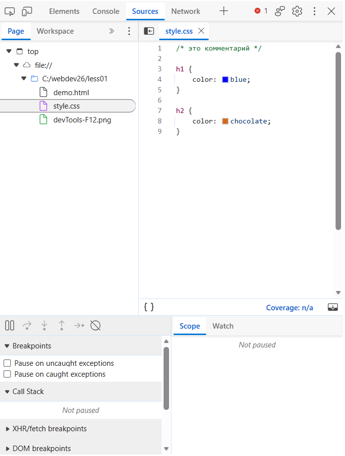

Сайт - это набор файлов на веб-сервере, который отправляется в браузер пользователя. Браузер читает код файла и отображает веб-страницу
Инструменты разработчика Chrome позволяют оперативно анализировать содержание и ресурсы веб-страницы прямо при ее просмотре. В частности, так вы можете проверять теги Менеджера кампаний 360.
Как перейти к Инструментам разработчика Чтобы открыть Инструменты разработчика в Chrome, выполните одно из следующих действий:
Нажмите правой кнопкой мыши в любом месте страницы и выберите Просмотр кода страницы. Откроется окно с HTML-кодом элемента, на который вы нажимали. В верхней части окна браузера нажмите Просмотр > Разработчикам > Инструменты разработчика.
